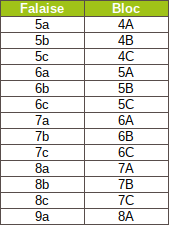

the route are assigned a number and a letter,
a number from 4 to 9 (4 being the hardest 9 symple), and a letter from A to C. For example, the 4a ways are the nicest and the 9c the hardest.
The level is established by the climbers themselves, during tests, several opinions, debates. This is why a grade can change over time.
a number from 4 to 9 (4 being the hardest 9 symple), and a letter from A to C. For example, the 4a ways are the nicest and the 9c the hardest.
The level is established by the climbers themselves, during tests, several opinions, debates. This is why a grade can change over time.